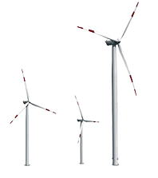
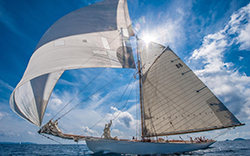
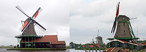
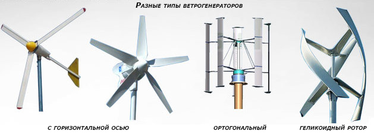

Альтернативная энергия: ветер
Энергия ветра — это производная от солнечной энергии. Ветер возникает из-за разницы температур: какой-то участок земли прогревается лучше, а какой-то — хуже. Нагретый воздух поднимается вверх, а холодный — опускается. Кроме того, сам воздух стремится к однородности — если где-то возникает «неоднородность», например, тёплый воздух поднялся вверх, из области с более холодным и «тяжёлым» воздухом начинает дуть ветер.

На Земле используется несколько видов уловителей ветра: это паруса, ветряные мельницы и ветрогенераторы. Парус и ветряная мельница использует энергию ветра для совершения какой-либо механической работы: перемещения в пространстве или вращения мукомольного жернова, колеса или пилы. А ветрогенератор преобразует кинетическую энергию ветра в электроэнергию.

Ветрогенераторы используются во многих странах мира. Например, Дания почти на 50% снабжается электроэнергией именно от ветровых электростанций. В России ветровые электростанции дают примерно 30% энергии. Самые крупные ветровые электростанции России находятся в Крыму: Донузлавская ВЭС (суммарная мощность 18,7 МВт), Останинская ВЭС («Водэнергоремналадка») (26 МВт), Тарханкутская ВЭС (15,9 МВт) и Восточно-Крымская ВЭС. В общей сложности они располагают 522 ветроагрегатами мощностью 59 МВт.

К малой ветроэнергетике относятся установки мощностью менее 100 кВт. Установки мощностью менее 1 кВт относятся к микро-ветровой энергетике. Они применяются на яхтах, сельскохозяйственных фермах для водоснабжения и т. д. Некоторые современные бытовые ИБП имеют модуль подключения источника постоянного тока специально для работы с солнечными батареями или ветрогенераторами. Таким образом, ветрогенератор может быть частью домашней системы электропитания, снижая потребление энергии от электросети.